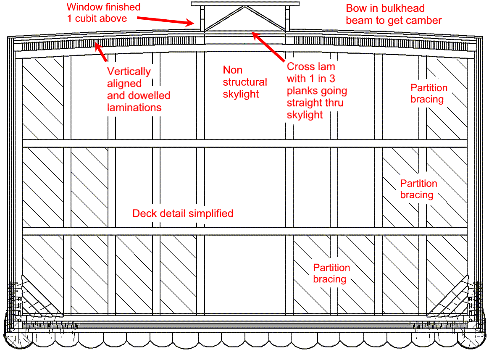

COPYRIGHT Tim Lovett © July 2004
..
The keel of the Ark had to survive an unusual launching. During the rise of the floodwaters, the ark was probably buffeted by earthquakes, particularly in a CPT scenario. This is something it should handle, provided it doesn't end up sliding down a hill or rattling around on a rock. Next it was lifted by the flood, a dangerous situation if there was a fair current. Worse still, it was beached during a global wind, which is almost certainly a sea with waves, even on the lee side of an island. It had to remain intact during the beaching too, else the animals would be stuck in the mud.
So we added a generous false keel. It is actually quite deep, keel log (750) + tranverse beams (200) + longitudinal planking (400) + framing (400) + decking (100), giving nearly 2m from bottom to lowest deck level. If the measurement of 30 cubit height is taken from the lowest extremity we could lose 3 to 4m when the roof is included. That's almost an entire deck.
The first simple question is: Do the measurements refer to capacity (interior volume) or the external envelope of the Ark?
Until this question has been answered, the external membrane will be taken as the datum indicating the limit of the ark, since everything outside this is 'wet' and inboard of this it should be 'dry'. This is an intermediate position between the extremes of inside and outside dimensioning.
For a structural defense of the Ark, not only should the largest likely cubit be taken, but perhaps even the assumption that the dimensions of 300 x 50 x 30 cubits define the internal volume. This would be the largest possible ark which is the worst case from an engineering perspective. The opposite is true for the space argument where a small ark is the conservative choice.
A closed tube is many times stronger than a tube unjoined. Consider a cardboard toilet roll tube - as soon as a lengthwise cut is made the cylinder is very weak and has lost almost all torsional resistance. That slice down the length of a toilet roll tube is like the slicing of the Ark roof by the full length window opening. It destroys the monocoque advantage.
|
Open and closed cylinders. A Torsion example. A closed cylinder has a polar moment of inertia given by J = pi (do 4 - di 4) / 32 An open cylinder (slitted) gives J = 2 (pi * r * t3) / 3 So for 30mm diam tube of 1mm wall thickness, the joined cylinder is 631 times stiffer in torsion ! (do = 30, di = 28, r = 14.5, t = 1) Relative thinness of the tube exaggerates the effect, but this round tube is proportionally thicker than the ark monocoque. With a rectangular section the ark will be less sensitive however, perhaps only a few hundred times softer... Internal frames and bulkheads will help, but we certainly must keep that roof skin together. |
The basic concepts of the transverse cross-section are shown below.
Curvature: The top beam is curved over the longer inboard posts prior to frame erection. Possibly laminated to reduce curvature of the bottom beam of the frame assembly, although this could be restrained by some temporary bracing. Curvature should also have a strengthening effect.
Vertical laminations: A fresh approach to plank lamination is used in the roof. In order to span main frames the planks are laid edgewise (vertical). This would normally make attachment to the frame difficult, but in the roof the requirements are less severe. The superimposed cross laminations also tie the roof down. Skew nailed spikes could also be added to fix roof and frame together.
Cross laminations: The trick is to extend SOME of the cross laminations right through the skylight area, effectively preventing any shear at the window zone. Perhaps 1 in 3 planks would suffice (calculations will tell). The effect would be a diagonal lattice spanning the skylight area. It would also be possible to reduce the number of through planks towards the ends of the hull where loads should be reduced, simply by skipping 3 or 4 planks at a time.
Skylight Structure: The raised skylight structure is non-structural. (It does not add strength to the hull). So the only requirements are wind loads and the risk of a freak wave perhaps. A generous (1 cubit) wall is added below the window to arrest roof water headed inboard. (See The Window). A pitched roof on the skylight seems hardly necessary on a ship. The smaller skylight could also lend itself to a relatively easy water collection by sloping the roof in a 'V' shape. There would need to be baffles along it's length to keep it there for a little while as it drain into tanks onboard.

1. Noah's Ark. A Feasibility Study. John Woodmorappe. Institute for Creation Research, Santee. 1994.
2. Safety Investigation of Noah’s Ark in a Seaway by S.W. Hong, S.S. Na, B.S. Hyun, S.Y. Hong, D.S. Gong, K.J. Kang, S.H. Suh, K.H. Lee, and Y.G. Je. Creation Ex Nihilo Technical Journal 8(1):26–35, 1994. http://www.answersingenesis.org/home/area/Magazines/tj/docs/v8n1_ArkSafety.asp
3. The Genesis Record. Morris H M Creation-Life Publishers, San Diego. 1976.